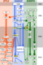
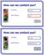
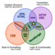

Chapter 2 The Big Picture: SVG and the Web
As with HTML, CSS, and the other standards that make up the web, the development of SVG has been a process of back-and-forth compromises between the authors of specifications, the builders of web browsers that implement them, and the designers of web pages that use them. Unlike those other languages, however, the SVG specification did not develop slowly and incrementally—it was created fully formed, as an incredibly complex graphics language.
If you work with HTML and CSS web design, you will find many aspects of SVG familiar—and a few quite different. The SVG standard was built upon other web standards, most notably XML and CSS, and has a complex DOM that can be manipulated with JavaScript. In that way, it is very similar to HTML. But because the primary focus of SVG is graphics, not text, it intersects and connects the parts of the web platform that you usually try to keep separate: content, formatting, and functionality.
This chapter starts with a refresher about the main web languages and their separate roles. It then looks at how SVG interacts with these languages. We adapt the stoplight example from Chapter 1 to show how you can build on a simple SVG to create complete web pages.
Figures and Examples#
The file names link to the code view on GitHub. Beware: the linked screenshots are hi-resolution; some have very large file sizes.
View all files for this chapter on GitHub.
- Figure 2-1. Timeline of web platform standards.
-
Solid arrows indicate direct extensions of existing standards; dashed arrows represent more indirect inspiration. Specifications that were abandoned, such as SVG 1.2 or ECMAScript (ES) 4, are not included.
- Example 2-1. Adding scripts to a standalone SVG file
-
- Live SVG file, sample-scripts.svg (Note: this file is a blank page; it doesn't actually do or draw anything. But it also doesn't show XML errors, which was the point of the example!)
- Example 2-2. Using JavaScript to animate an SVG stoplight
-
- Live SVG file, animated-stoplight-scripted.svg (script applied to the basic stoplight)
- Live SVG file, labelled-stoplight-scripted.svg (the same script applied to the labelled stoplight)
- Live SVG file, transformed-labelled-stoplight-scripted.svg (and just for fun, another one with gratuitous SVG/SMIL animations, which didn't end up in the book)
- Figure 2-2. Sample web page using an SVG image file
- Example 2-3. CSS-animated stoplight as an image in a web page
-
- Live HTML file, svg-as-image.html
- PNG screenshot, svg-as-image.png
- Live HTML file,
svg-as-picture.html (a variation using a
<picture>to include a fallback PNG for older browsers) - Live HTML file,
svg-as-object.html (a variation using an
<object>instead, so it can embed the scripted version of the animation)
- Figure 2-3. A web page using inline SVG to enhance form validation feedback
- Example 2-4. Controlling inline SVG with HTML form validation and CSS pseudoclasses
- Example 2-5. CSS stylesheet for the code in Example 2-4
- Figure 2-X1. The core web platform languages, their roles and their areas of overlap.
-
Web pages and web sites exist at the intersection of all four regions.
{kind=link}
{kind=link}
{kind=link}
{kind=link}
{kind=link}
{kind=link}
{kind=link}
{kind=link}
{kind=link}
{kind=link}
{kind=link}
{kind=link}
{kind=link}
{kind=link}
{kind=link}
{kind=link}
{kind=link}
{kind=link}
{kind=link}
{kind=link}
Online Extras#
- “The Web Platform”: The web platform is the interconnected set of standards used by websites and browsers: HTML, CSS, HTTP, URLs, JavaScript, the DOM. And SVG.
- Reference: Embedding SVG in HTML
- Reference: Select SVG DOM Methods and Objects